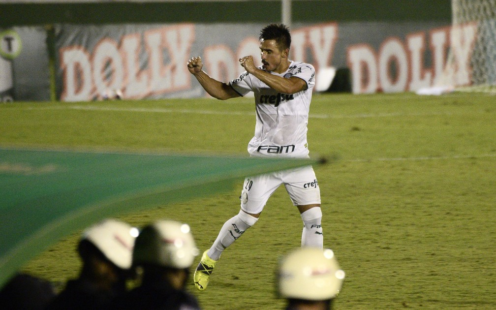

Após gol, Willian festeja vitória do Palmeiras e relembra passado no Guarani: "Lágrimas nos olhos"
O atacante Willian viveu uma noite especial na vitória por 2 a 1 do Palmeiras sobre o Guarani,
nesta sexta-feira, no Brinco de Ouro, em Campinas: ele fez o gol da virada do Verdão, justamente
contra o clube que o revelou.
Após a partida, o atacante palmeirense falou sobre a importância da vitória e de seu primeiro gol
na temporada.

– Mais importante do que meu gol foi a importância da vitória. Eu falei até
antes no vestiário, tinha que ter respeito com o Guarani, mas era uma
partida para voltar a vencer na competição, somos terceiros no grupo e
era uma chance de conseguir uma vitória e pontuar na competição. Fico
feliz pelo gol, que a gente possa dar sequência na temporada – analisou.